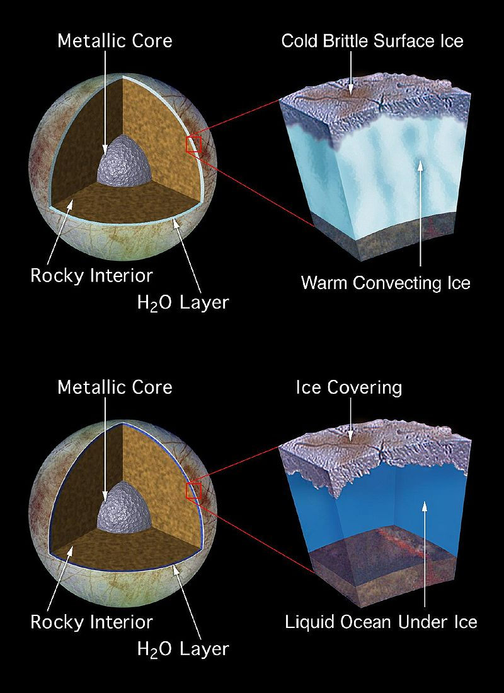
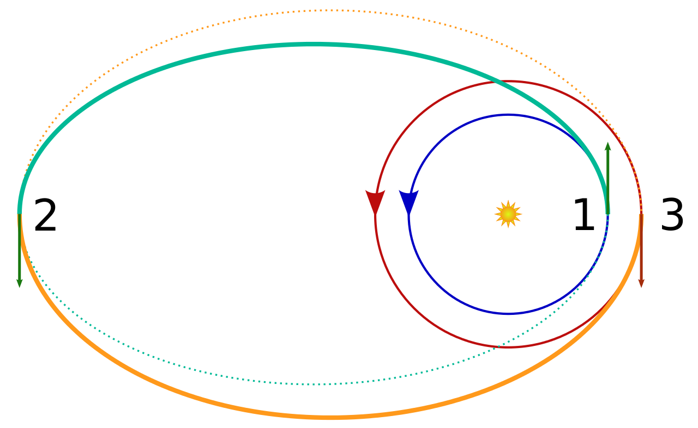
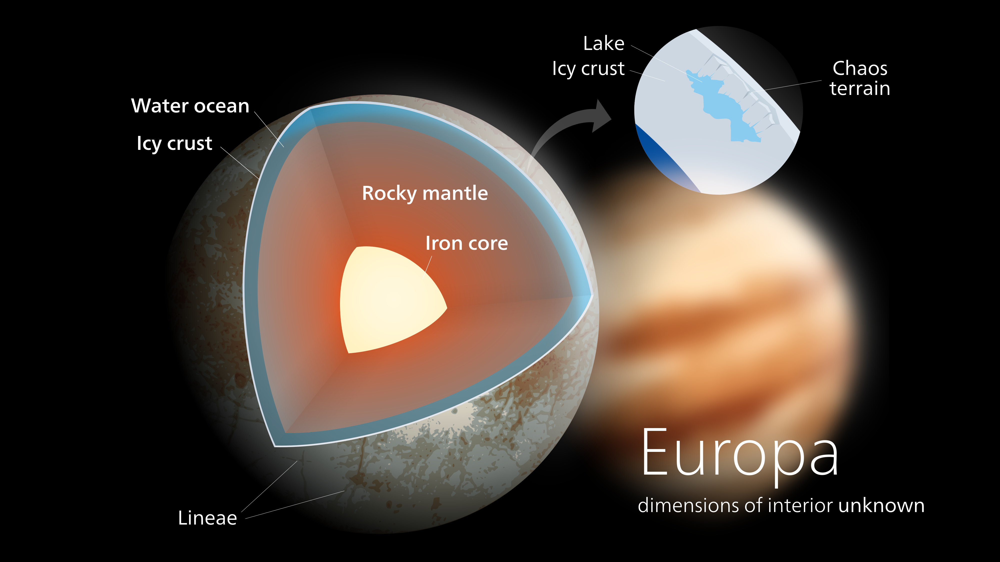
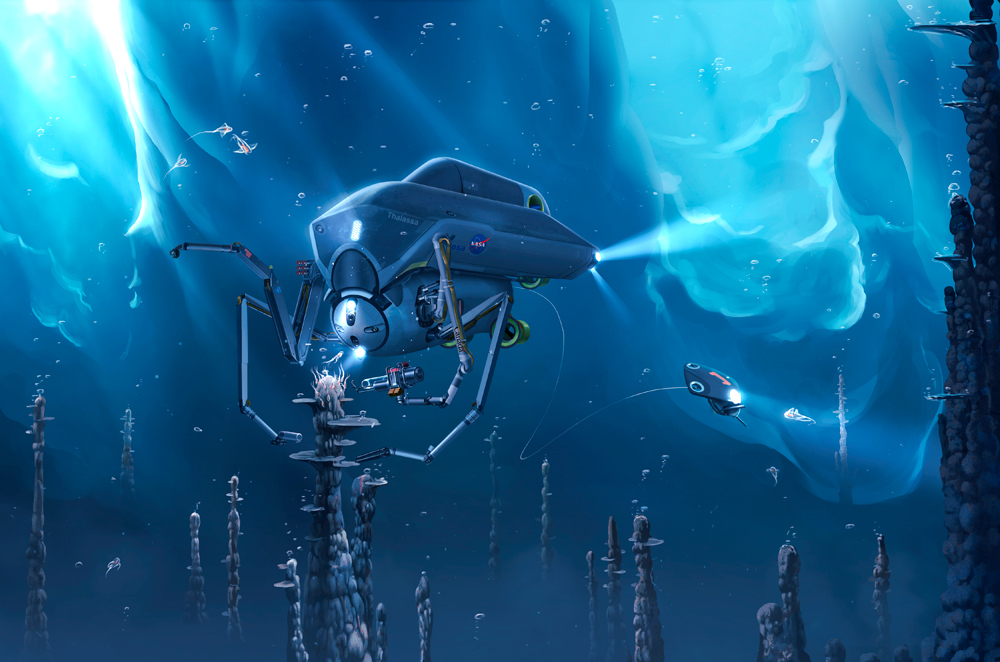
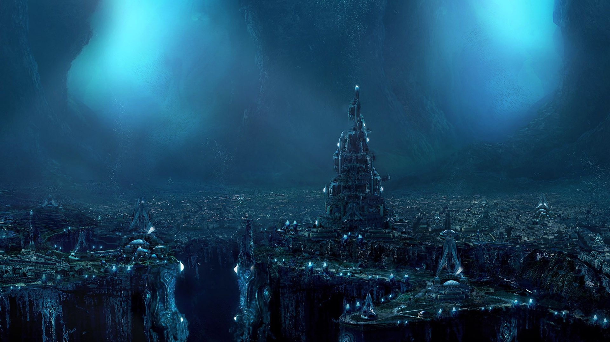

What is Europa? Europa, is the smallest of the four Galilean moons orbiting Jupiter,
and the sixth-closest to the planet. It is also the sixth-largest moon in the Solar System.
Geology of Europa

Scientists' consensus is that a layer of liquid water exists beneath Europa's surface,
and that heat from tidal flexing allows the subsurface ocean to remain liquid.
Europa's surface temperature averages about 110 K (−160 °C; −260 °F) at the equator
and only 50 K (−220 °C; −370 °F) at the poles, keeping Europa's icy crust as hard as granite.
Astronomical aspects

Europa has an eccentric orbit, which is interesting because the gavitational pull
will change the and heat up the geological composition of the moon.
How most think Europa's geology is made up

Tidal flexing kneads Europa's interior and ice shell, which becomes a source of heat.
Depending on the amount of tilt, the heat generated by the ocean flow could be 100 to thousands
of times greater than the heat generated by the flexing of Europa's rocky core in response to
gravitational pull from Jupiter and the other moons circling that planet.

All Systems Go for NASA's Mission to Jupiter Moon Europa

Could there be civilized life?
Jupiter’s moon Europa has a liquid ocean that conceivably may harbor life,but the lack of solar energy necessarily limits its planetary potential for advanced life